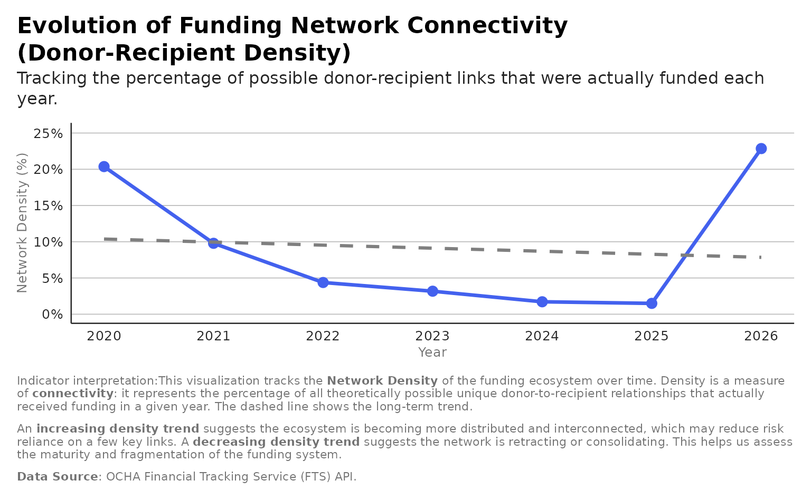
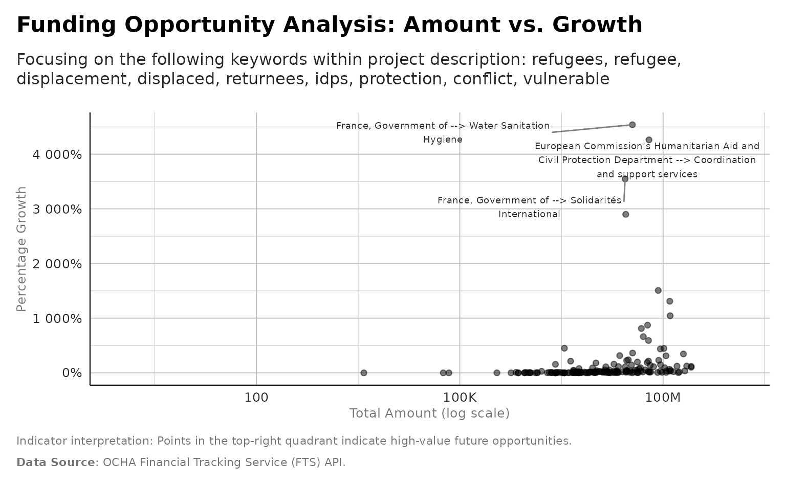
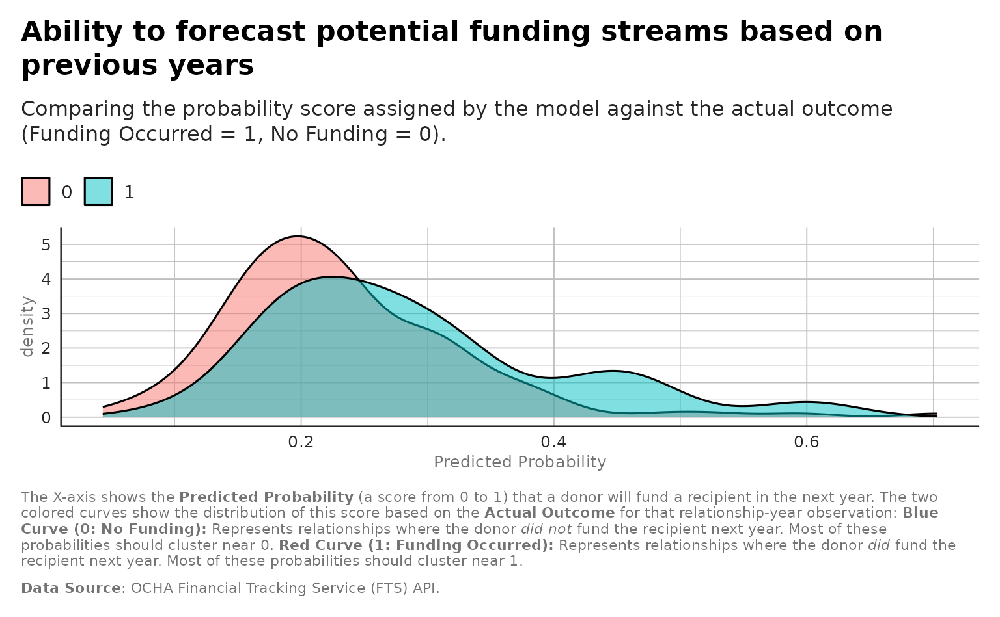
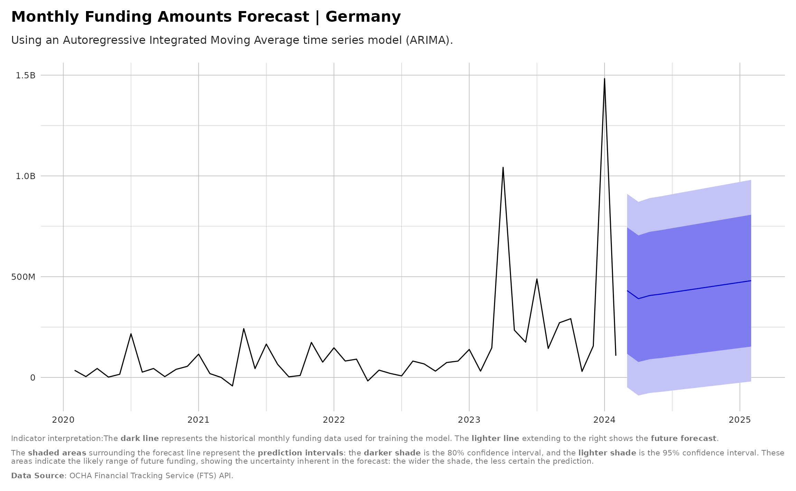
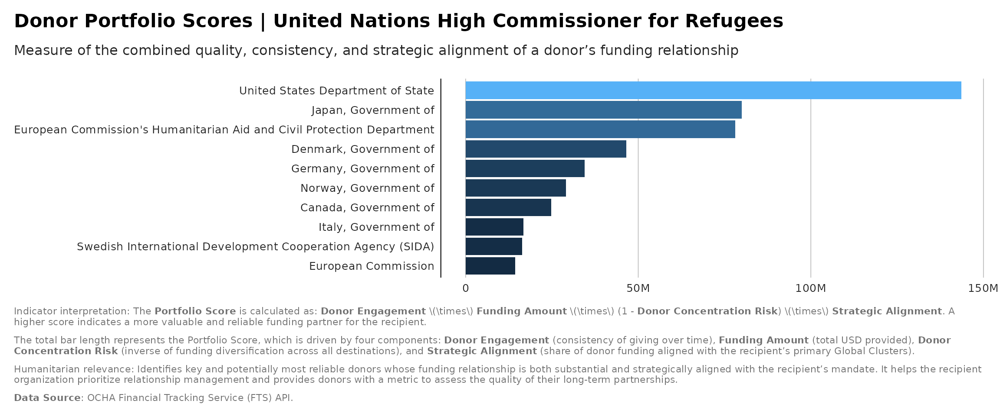
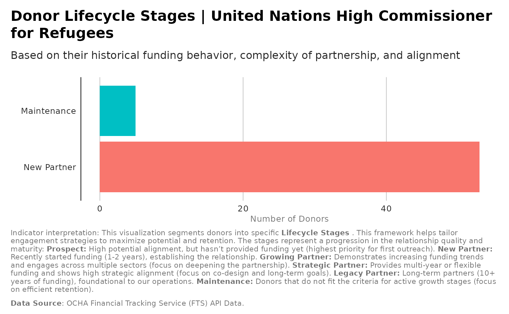
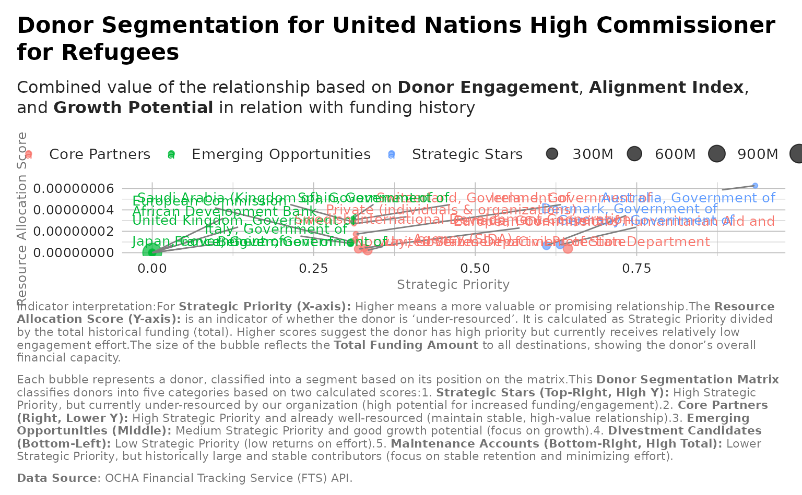
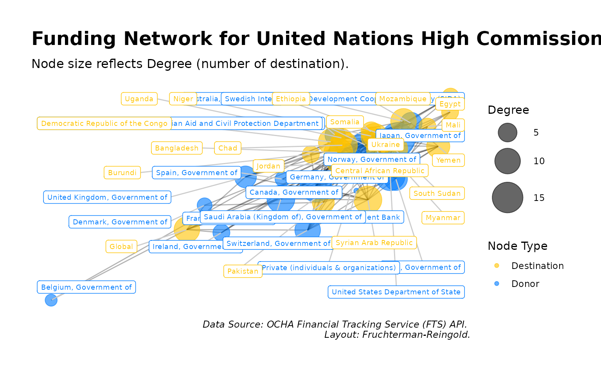

library(ftsAnalysis)
#> Registered S3 method overwritten by 'quantmod':
#> method from
#> as.zoo.data.frame zooGlobal
analysis_wordcloud_from_flows
analysis_wordcloud_from_flows(flows, facet_by_year = FALSE)
# Returns a named list of word cloud objects
yearly_clouds <- analysis_wordcloud_from_flows(flows, facet_by_year = TRUE)
#> Warning in max(dataOut$freq): no non-missing arguments to max; returning -Inf
#> Warning in max(dataOut$freq): no non-missing arguments to max; returning -Inf
#> Warning in max(dataOut$freq): no non-missing arguments to max; returning -Inf
#> Warning in max(dataOut$freq): no non-missing arguments to max; returning -Inf
#> Warning in max(dataOut$freq): no non-missing arguments to max; returning -Inf
# To view the cloud for a specific year
print(yearly_clouds[["2015"]])
print(yearly_clouds[["2024"]])
print(yearly_clouds[["2025"]])analysis_systemic_network_insights
result <- analysis_systemic_network_insights(flows)
#> Warning: Using `size` aesthetic for lines was deprecated in ggplot2 3.4.0.
#> ℹ Please use `linewidth` instead.
#> ℹ The deprecated feature was likely used in the ftsAnalysis package.
#> Please report the issue at
#> <https://github.com/edouard-legoupil/ftsAnalysis/issues>.
#> This warning is displayed once every 8 hours.
#> Call `lifecycle::last_lifecycle_warnings()` to see where this warning was
#> generated.
print(result$plot)
#> `geom_smooth()` using formula = 'y ~ x'
analysis_prepare_opportunity_dataset
crisis_keywords = c("refugees", "refugee","displacement", "displaced",
"returnees","idps",
"protection", "conflict", "vulnerable")
result <- analysis_prepare_opportunity_dataset( flows,
lookback_years = 3,
crisis_keywords = crisis_keywords)
#> Warning: There was 1 warning in `dplyr::summarise()`.
#> ℹ In argument: `max_cluster_share = max(cluster_share, na.rm = TRUE)`.
#> ℹ In group 347: `donor = "European Commission's Humanitarian Aid and Civil
#> Protection Department"`, `recipient = "Emergency Shelter and NFI"`, `year =
#> 2021`.
#> Caused by warning in `max()`:
#> ! no non-missing arguments to max; returning -Inf
print(result$plot)
#> Warning in ggplot2::scale_x_log10(labels = scales::label_number(scale_cut =
#> scales::cut_short_scale())): log-10 transformation introduced
#> infinite values.
#> Warning: Removed 6559 rows containing missing values or values outside the scale range
#> (`geom_point()`).
analysis_fit_opportunity_model
features <- analysis_prepare_opportunity_dataset(flows)$data
#> Warning: There was 1 warning in `dplyr::summarise()`.
#> ℹ In argument: `max_cluster_share = max(cluster_share, na.rm = TRUE)`.
#> ℹ In group 347: `donor = "European Commission's Humanitarian Aid and Civil
#> Protection Department"`, `recipient = "Emergency Shelter and NFI"`, `year =
#> 2021`.
#> Caused by warning in `max()`:
#> ! no non-missing arguments to max; returning -Inf
model_results <- analysis_fit_opportunity_model(features , min_year = NULL)
print(model_results$plot)
Donor or Recipient
analysis_funding_forecast
Aggregate historical amounts by month and forecast future funding for a donor or recipient.
result <- analysis_funding_forecast(flows,
by = "donor",
name = "Germany")
print(result$plot)
Recipient
analysis_portfolio_scores
result <- analysis_portfolio_scores(flows,
recipient_name="United Nations High Commissioner for Refugees",
top_n = 10)
print(result$plot)
analysis_donor_lifecycle_stage
result <- analysis_donor_lifecycle_stage(flows,
recipient_name= "United Nations High Commissioner for Refugees" )
print(result$plot)
analysis_donor_segmentation
result <- analysis_donor_segmentation(flows,
recipient_name ="United Nations High Commissioner for Refugees" )
print(result$plot)
analysis_donor_network_metrics
result <- analysis_donor_network_metrics(flows,
recipient_name = "United Nations High Commissioner for Refugees")
print(result$plot)
analysis_competitive_intel_matrix
result <- analysis_competitive_intel_matrix(flows,
recipient_name = "United Nations High Commissioner for Refugees",
peers = NULL)
print(result$plot)
#> Warning: Removed 21 rows containing missing values or values outside the scale range
#> (`geom_point()`).
#> Warning: Removed 21 rows containing missing values or values outside the scale range
#> (`geom_text()`).